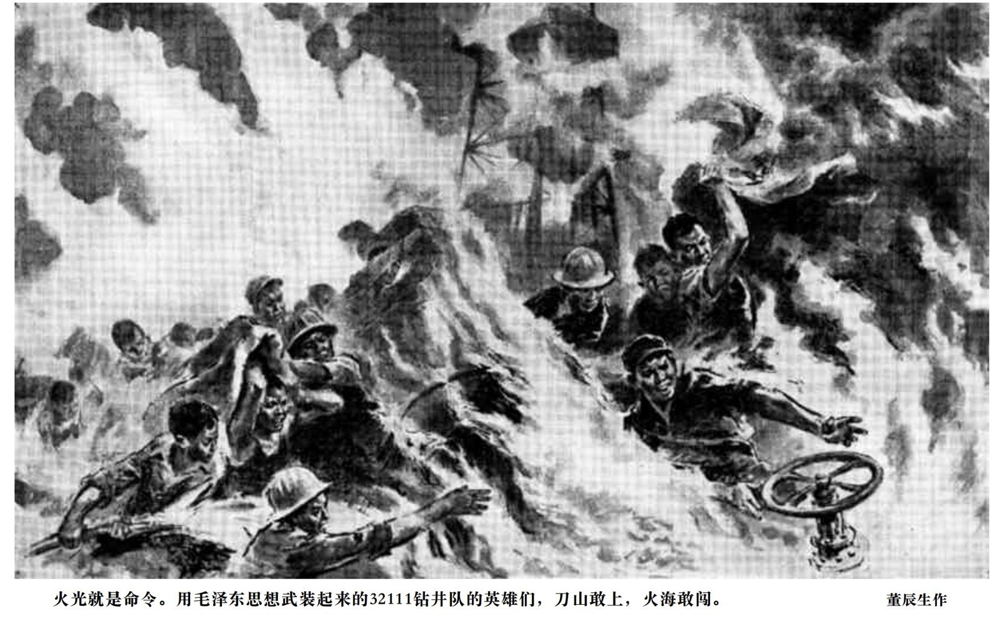
董辰生，《人民日報》插圖（1966 年 9 月 26 日）：「火光就是命令。」 崇高
The Sublime
「火再大，沒有用毛澤東思想武裝起來的石油工人的志氣大。」CHI 4335 面對極端 · 第 10 週 · 崇高
← → 翻頁 · 1 –9 章節 · G 跳至頁碼 · L 雷射筆 · F 全螢幕
第一個問題：這是什麼？
《解放軍報》1966 年 10 月 14 日
用毛澤東思想武裝起來的人是最大的戰鬥力 （把毛主席的書當作行動指南）
這篇文章是什麼文類？
你的根據是什麼？在文本裡找證據 。
兩個站在高處的人
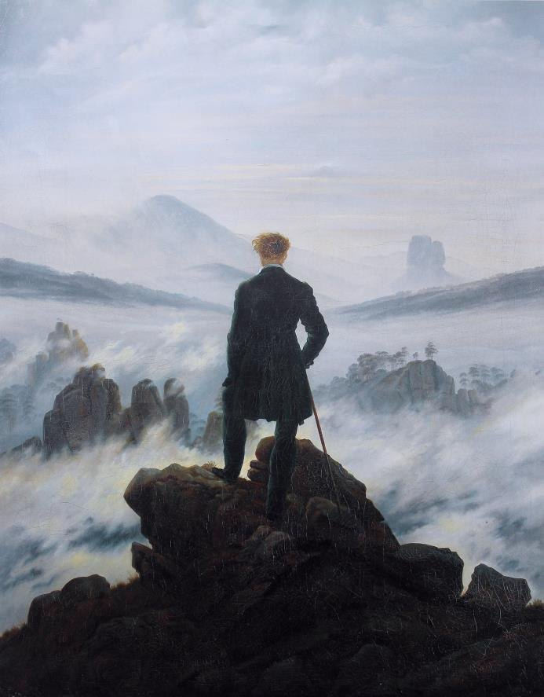
弗里德里希（Caspar David Friedrich）， 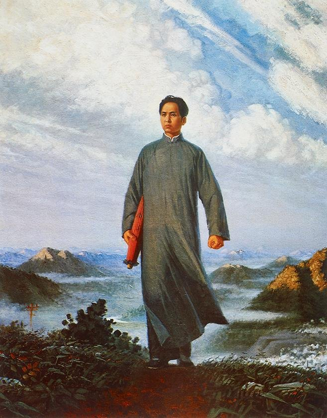
劉春華，《毛主席去安源》，1967
有什麼不同？
左：背影 。我們和他一起看 霧海。自然是主角。
右：正面 ，朝我們走來。山與雲退到身後。我們看他 。
崇高感從自然，移到了人身上。
朗吉努斯：《論崇高》 Περὶ ὕψους · Peri Hypsous · On the Sublime
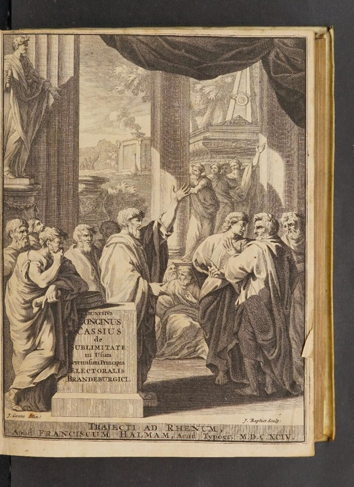
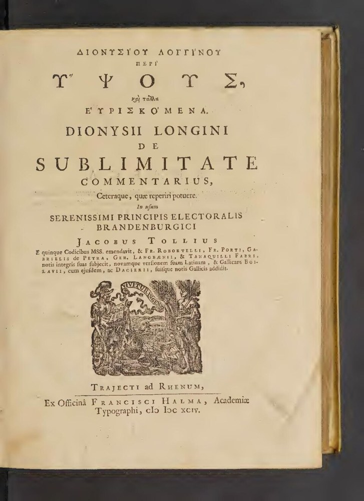
希臘文、拉丁文對照本，Tollius 編，烏特勒支，1694
· 古希臘的修辭學論文，約公元 1 世紀，作者不詳，傳統上歸於「朗吉努斯」。
· 談的不是自然，而是語言 ：荷馬、德摩斯梯尼、柏拉圖、《創世記》。
· 16 世紀重新出版；布瓦洛（Boileau）1674 年的法譯，讓「崇高」成為 18 世紀歐洲美學的中心（伯克、康德）。
“…the effect of elevated language upon an audience is not persuasion but transport […] Sublimity flashing forth at the right moment scatters everything before it like a thunderbolt .”
「崇高的語言對聽眾的效果，不是說服，而是使人出神 （ἔκστασις）……崇高在恰當的時刻一閃而出，像雷霆一樣掃蕩一切 。」
Longinus 1.4, trans. W. Rhys Roberts (1899)。中譯為暫譯。 “…our soul is uplifted by the true sublime; it takes a proud flight, and is filled with joy and vaunting, as though it had itself produced what it has heard .”
「真正的崇高使我們的靈魂升起……充滿喜悅與自豪，彷彿它聽到的，是它自己說出來的 。」
Longinus 7.2 (Roberts)。聽眾覺得那是自己的 話：後面會回到「我們」。
朗吉努斯：崇高的五個來源 Longinus, Peri Hypsous, 1st c. CE
「天才的效果不是說服聽眾，而是使他們忘我 ……這些崇高的東西行使著一種不可抗拒的力量，並征服每一個聽眾。」（1.3–4，暫譯）
宏偉的思想grandeur of thought
「崇高是偉大心靈的回聲。」
強烈的情感vehement passion
激昂、受感召的情感。
辭格figures
修辭問句 （不求答案）· 頓呼 （突然轉向缺席者或無生命之物說話）· 連詞省略 （短促、急迫）
高貴的措辭noble diction
驚人的選詞 · 隱喻 · 擴展 （累積、誇張、鋪陳）
莊嚴的結構composition
把詞語、思想、情感組成一個有節奏的整體。
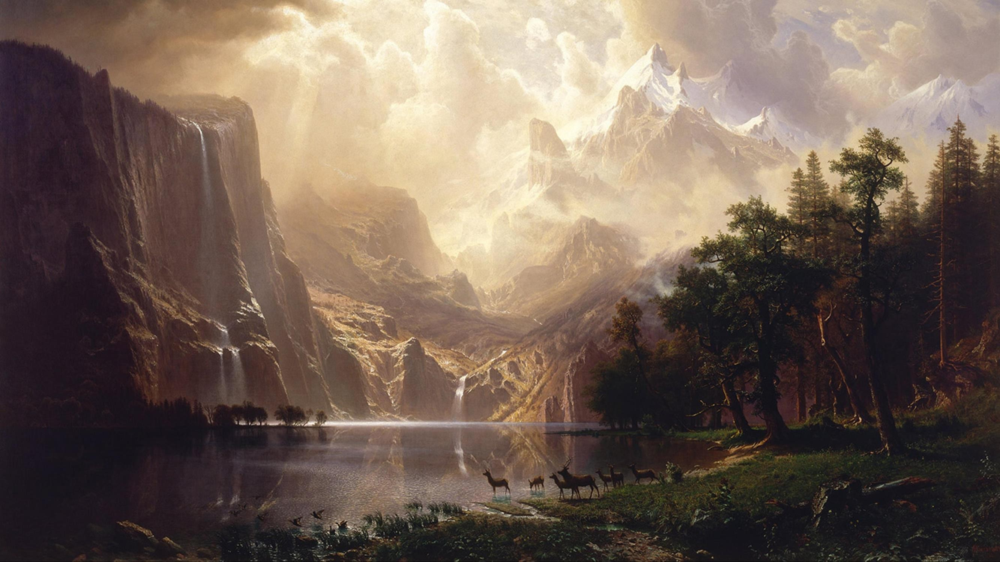
比爾施塔特（Albert Bierstadt），《在內華達山脈中》，1868
康德：兩種崇高 Critique of Judgment, 1790
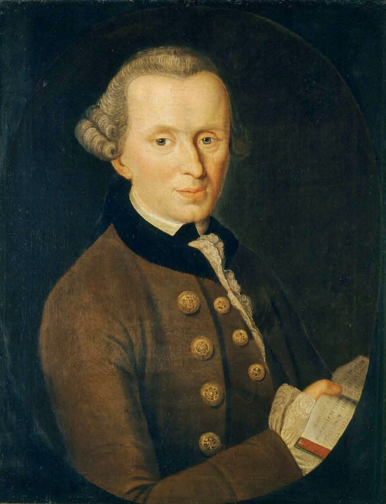
康德（Immanuel Kant, 1724–1804）
美 ：有形式、有邊界，想像力與知性和諧地遊戲。崇高 ：無形式、無限制，先不快，後愉悅 。
數學的崇高 大小
星空、海洋、金字塔、聖彼得大教堂
想像力能一部分一部分地領會 （apprehension），卻無法把它們統攝 （comprehension）成一個整體：目光移到山頂，已經忘了山腳。
理性給出「無限 」的理念：我們畫不出無限，卻能思考 它。
→ 我們的心智，比物理宇宙更大。
力學的崇高 力量
雷雨、火山、颶風、咆哮的瀑布
身體在自然的力量面前完全無助 。但前提是：我們身處安全之地 。對象是可怕的 （fearful），我們卻並不害怕 （afraid）。
自然可以碾碎肉體，卻動搖不了我們的自由意志 與道德 。
→ 我們在道德上高於自然。
康德：崇高的兩幕劇 Critique of Judgment, 1790
① 想像力潰敗生命力的瞬間阻滯：不快
→
② 理性勝出使命高於自然：「否定的愉悅」
“…nature is here called sublime merely because it elevates the imagination to a presentation of those cases in which the mind can come to feel the sublimity of its own vocation even over nature .”
「……自然在此之所以被稱為崇高，僅僅是因為它把想像力提升到這樣一種呈現：心靈能夠感受到自身使命的崇高，甚至凌駕於自然之上 。」
Kant, §28。中譯為暫譯。 還有一個條件：只有身處安全之地 ，可怕的景象才會越可怕越吸引人（§28）。
康德的時代：微積分與「極限」
· 萊布尼茨 1684 年發表微分法；牛頓的「流數」。18 世紀的數學在處理無窮 ：無窮級數、收斂、一步一步逼近一個極限 。
· 康德的數學的崇高，就是這個圖式：想像力一個單位一個單位地累加 （「漸進的把握」，progressive apprehension），卻無法把它們一下子 總括成一個整體。
· 理性能做想像力做不到的事：把無限 當作一個整體來思考 。我們想像不出無限，卻能想到它：這讓人自豪。
「康德的理論必須放回西方數學的歷史脈絡：當時正蓬勃發展的微積分（向極限收斂）……」
Kurzynski, “On the Technology of the Sublime,” 數字人文 2022.1, 93
極限（理性：一下子想到整體）
½，¾，⅞，…… 一步一步（想像力：漸進的把握）
32111：「五十多米……二十里……四十里……」一步一步堆上去；最後是十二次「無限 熱愛」。
Kant, Critique of Judgment , §26；Kurzynski (2022)。嚴格的極限定義要到柯西（Cauchy, 1821）才出現。
李澤厚：實踐的崇高
李澤厚（1930–2021） 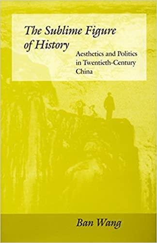
王斑（選讀）
自然本身不崇高：要等人征服 了它，它才變成崇高。崇高的場景：燈火通明的工地、「鑽探聲打破的平原的沉寂 」。
「個人在生活、實踐的鬥爭中為了先進事業、為了社會集體愈忘我、愈大公無私、犧牲一己 ……那末，他就愈能成為崇高的對象。黃繼光、向秀麗是崇高的，他（她）們為了祖國和人民赴湯蹈火。雷鋒、歐陽海以及今天無數活著的英雄模範是崇高的……」李澤厚，〈關於崇高與滑稽〉，《美學論集》，頁 205（寫於 1950 年代末，1980 年發表；簡體轉繁）
王斑：「崇高變成了一種自我犧牲的倫理 」（Wang 1997, 167）。康德的觀者站在安全處；李澤厚的主體在工地上、在戰場上，而且是集體 。
1966 年 6 月 22 日，塘河 1 號氣井
背景
三線建設 ：工業搬進內陸；石油工人的「最高指示」：找氣找油 。範本是大慶 和「鐵人」王進喜。
6/22 凌晨
四川合江 、江津 交界，新構造上的第一口探井。關井測壓時出氣管道爆炸起火，約 30 分鐘後撲滅。
傷亡
6 人 死亡（5 人當場，鄧木全死於醫院），21 人 受傷。
9/26 起
全國宣傳；「無產階級革命英雄主義鑽井隊」。
10/4 → 10/14
副隊長劉守榮 在北京群眾大會上作報告；《解放軍報》刊出，「文中小標題是本報加的」。
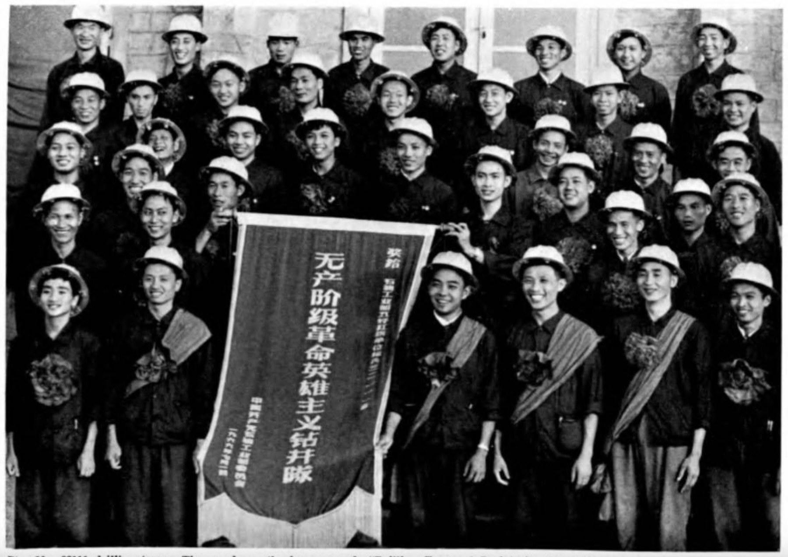
32111 鑽井隊。China Reconstructs , 1967/1, 27
〈用毛澤東思想武裝起來的人是最大的戰鬥力〉(1966)；Liu Shou-jung, “Heroic Drilling Team Battles a Sea of Fire” (1967)；何蜀 (2001)；王仕新 (2021)。
《解放軍報》 PLA Daily, 1956–
「殺人有兩種，一種是用槍桿子殺人，一種是用筆桿子殺人。」：毛澤東（Gilkison & Kurzynski 的題詞）
1956/1/1
創刊，中央軍委 機關報。1954 年羅榮桓籌組，1955 年應彭德懷之請由毛澤東批准：全軍只辦一份報紙，確保思想一致。
1961/5/1
林彪指示後，報眼 每天刊登「毛主席語錄」；1964 年總政治部據此編成《毛主席語錄》（小紅書）。
1965–66
帶頭批《海瑞罷官》、批鄧拓：「我們 就是要鬥倒你！」
1967–
與《人民日報》、《紅旗》並稱「兩報一刊 」：社論等於中央文件，全國照登。文革中少數不停刊的報紙之一。
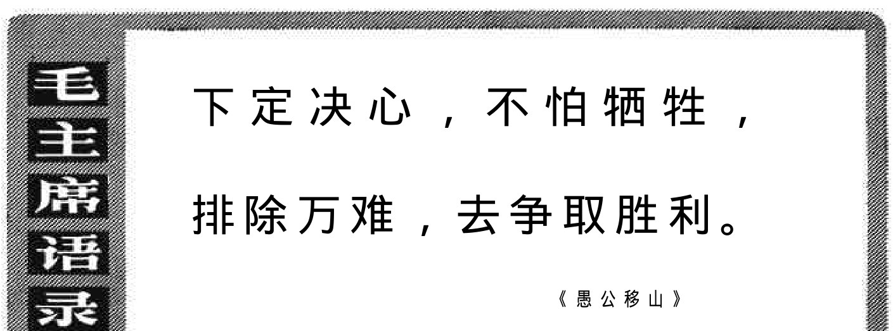
報眼的「毛主席語錄」（此為《人民日報》1966/9/27，也照這個做法） 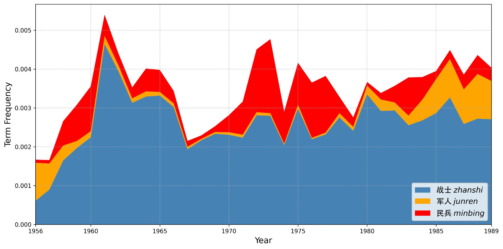
218,494 篇文章：「戰士」、「軍人」、「民兵」佔版面的比例，1956–1989
Gilkison & Kurzynski, “Vectors of Violence,” Journal of Cultural Analytics (2024), 1–4；吳廷俊、喻頻蓮，〈媒體‧語錄環境‧個人崇拜〉，《新聞學研究》127 (2016), 42–47。
文本的骨架：十個小標題
把毛主席的書當作行動指南
把革命利益看成第一生命
哪裡危險就往哪裡衝
熊焰燒不毀紅心
不撲滅火海決不罷休
為人民而死比泰山還重
腦子裡只有偉大的毛澤東思想
象麥賢得那樣做毛主席的堅強戰士
千言萬語表達不盡對毛主席的熱愛
永遠聽毛主席話，跟著毛主席幹革命
之前 學習毛主席著作；找到「氣老虎」。
火 爆炸、衝鋒、關閘門。
死 五個人的死與「姿勢」。
醫院 傷員、語錄、輸血。
教訓 感恩與誓言。
小標題是報紙加的。火只佔中間一段；文章以毛澤東思想 開頭，也以它結束。
一場「從來沒有見到過的大火」
「強大的天然氣流哇哇直叫 ，兇猛的大火橫穿井口和機房，衝出五十多米 遠，二十里 外聽見響聲，四十里 外看見火光。火焰衝到對面的山坡上，又倒捲過來，火浪來回翻滾，高達三十多米 。五十多米 方圓的井場，成了一片火海 ，四十多米 高的鋼鐵井架，三分鐘 就被燒倒了。機房的設備，很快燒成一團團的鐵疙瘩，對面的山坡也被火燒紅了，樹木燒成了木炭。這是一場從來沒有見到過的大火。」「把革命利益看成第一生命」
數學的崇高 ：數字一個接一個，越堆越大（朗吉努斯的「擴展」）。
力學的崇高 ：鋼鐵熔成「鐵疙瘩」。氣流會「叫」：自然像一頭野獸。
朗吉努斯：選擇與密度
“…sublimity will be achieved if we consistently select the most important of these inherent features and learn to organize them as a unity by combining one with another. The first of these procedures attracts the reader by the selection of details, the second by the density of those selected .”
「如果我們總是選擇 題材中最重要的特徵，並學會把它們組合成一個整體，就能達到崇高。前者以細節的選擇吸引讀者，後者以所選細節的密度 吸引讀者。」
Longinus 10.1, trans. Fyfe / Russell (Loeb, 1995)，引自 Kurzynski (2022)。中譯為暫譯。
選擇
大火：聲音 （哇哇直叫、二十里外）、光 （四十里外）、高度 （三十多米）、時間 （三分鐘）。
密度
「前面的人倒下去了，後面的人又衝了上去；一批人倒下去，又一批人衝了上去。前赴後繼，臨危不懼。」
一擊又一擊
朗吉努斯論德摩斯梯尼：連詞省略和重複，讓演說者「一擊又一擊」（blow after blow）地敲打聽眾的心，又以「不斷的變化」保住重複的力量。→ 四次「死後的姿勢」，每次都換一點說法。
反轉：康德的兩幕劇？
「當時我們只有一個信念，火再大，沒有用毛澤東思想武裝起來的石油工人的志氣大，火再猛，沒有我們石油工人的鬥志猛 。為了捍衛毛澤東思想，為了無產階級文化大革命的勝利，我們刀山敢上，火海敢闖。」「把革命利益看成第一生命」
火的大、火的猛想像力被壓倒
→
志氣更大、鬥志更猛但不是「理性」，而是毛澤東思想
和康德最大的不同：這裡沒有安全距離 。崇高的主體不是站在山頂上，而是衝進火裡。
「氣老虎」
「……終於找到了這個大『氣老虎』 ，獲得了一個高壓、高產大氣田，狠狠地打擊了那些污衊這個構造沒有油氣的資產階級『權威』。為了逮住 這個『氣老虎』，我們遵照毛主席不打無準備之仗，不打無把握之仗的教導……」「把毛主席的書當作行動指南」、「把革命利益看成第一生命」
張永慶（犧牲前）：「同志們，我們天天想抓『氣老虎』。現在『氣老虎』就要叫我們抓住了，我們要敢於鬥爭，敢於勝利。」「為人民而死比泰山還重」
兩個敵人：「資產階級權威」（專家說這裡沒氣）＋ 自然（一頭老虎）。抓老虎 的故事，讀者早就讀過了。
楊子榮打虎：讀者早就認得的故事
真人 楊子榮（1917–1947）→
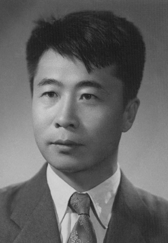
小說 曲波（1923–2002）打虎 →
樣板戲 《智取威虎山》（1967 年演出）
小說裡，楊子榮在上威虎山的路上打死一隻東北虎，把它當見面禮送給匪首：死老虎證明了他假扮的土匪身份 。老虎本身就是一件「本真 」的道具。
1966 年，讀到「抓住『氣老虎』」，讀者想到的是楊子榮（還有《水滸傳》的武松）。Saxton：本真，來自讀者以前讀過、看過 的再現。
Kurzynski, “Fictionality Unleashed” (manuscript), 9；曲波，《林海雪原》（1957）。
朗吉努斯：把死者變成神
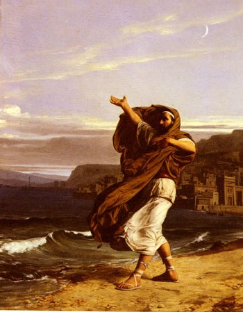
勒孔特·杜諾伊（Lecomte du Nouÿ），《德摩斯梯尼練習演說》，1870
公元前 338 年，雅典在喀羅尼亞（Chaeronea）戰敗 。德摩斯梯尼必須為那場失敗的戰爭辯護。
「不，雅典人，你們沒有錯！我以那些在馬拉松 衝在最前面、冒死作戰的祖先起誓……」Demosthenes, On the Crown 208（朗吉努斯 16.2 引用）
朗吉努斯（大意）：一句誓詞，他就把祖先神化 了（“deified his ancestors”）：以這樣死去的人起誓，彷彿他們是神。失敗，於是變成了光榮。
32111 的第一句話：「我們隊奮不顧身血戰火海的勝利 」。一場事故，六個人死了；文本說：「死得偉大，死得光榮，死得其所，死得比泰山還重！」
Longinus 16.2–4，據 W. Rhys Roberts 英譯（1899）概述。
具身性：燒爛的手
「管線爆炸的時候，有三個同志正在井場換裝閘門，抬著閘門的許永茂和黃成厚一下被天然氣衝倒到兩米多遠的水溝裡。……黃成厚被衝倒在水閘門旁邊，他想爬起來去開水閘門，手還沒有挨著閘門，烈火從他背後襲來，面部、背部和手臂都被燒壞了。他忍著劇痛，還是伸手把水閘門打開，手指上被燒爛了的皮肉一下被粘在閘門上 。」「哪裡危險就往哪裡衝」
名字、距離（「兩米多遠」）、哪一道閘門：可以核對。皮肉粘在鐵上：讓你感覺到 。
燒不壞的紅心
「烈火能毀鋼和鐵，熊焰難征革命心。兇猛的火焰，燒掉了我們 的頭髮，燒焦了我們 的皮膚，燒壞了我們 的手腳，但永遠燒不壞我們 忠於毛主席、忠於黨的一顆紅心 。」「熊焰燒不毀紅心」
· 身體一部分一部分地被毀：頭髮、皮膚、手腳。心 完好無缺。康德：個人可能屈服，「人格中的人性」卻未被貶低。
· 注意代詞：不是「他的頭髮」，而是「我們 的頭髮」。誰的頭髮？
死後的姿勢
張永慶
「在他死後，仍然保持著伸開雙手，搶開閘門的姿勢 。」
王平
「當他犧牲之後，仍然向前伸著雙手，保持著搶關閘門的姿勢 。」
羅華太、王祖明
「一拉，他倆雙手的皮都掉了。他們犧牲後，仍保持著去搶關閘門和保護壓力表的姿態，充分體現出……對革命高度負責的形象 。」
吳仲啟
「他臨死還伸出左手翹著大拇指 ，朝著電動開關，表示了誓死也要完成任務的決心。」
屍體變成了雕像 ：王斑書名裡的「崇高形象 」（figure）。
四次「姿勢」。敘述者怎麼知道的？
進入別人的腦子
雷洪炳被火浪推倒，「火烤得他難受，他清醒地想 ：『作為一個指揮員，越是在緊要關頭，越要沉著機智。光憑個人勇敢不行，要依靠群眾力量，弄清氣源，切斷氣流，才能征服這場大火。』」
他再也爬不起來。「這時，金光閃閃的毛主席語錄從他眼前閃過 ：『……不論在任何艱難困苦的場合，只要還有一個人，這個人就要繼續戰鬥下去。』毛主席的指示，給了他無窮的力量，他一下子就站了起來……」
牟茂修聽說丈夫被燒傷，「馬上想到毛主席的教導：『要奮鬥就會有犧牲，死人的事是經常發生的。』她想 ：『現在還是搶救國家財產要緊……』」
敘述者劉守榮說「我們」，卻知道別人在想什麼、眼前閃過什麼。這是小說 的能力（Cohn：第三人稱的內心，是虛構的「路標」）。
連環畫：把「眼前閃過」畫出來
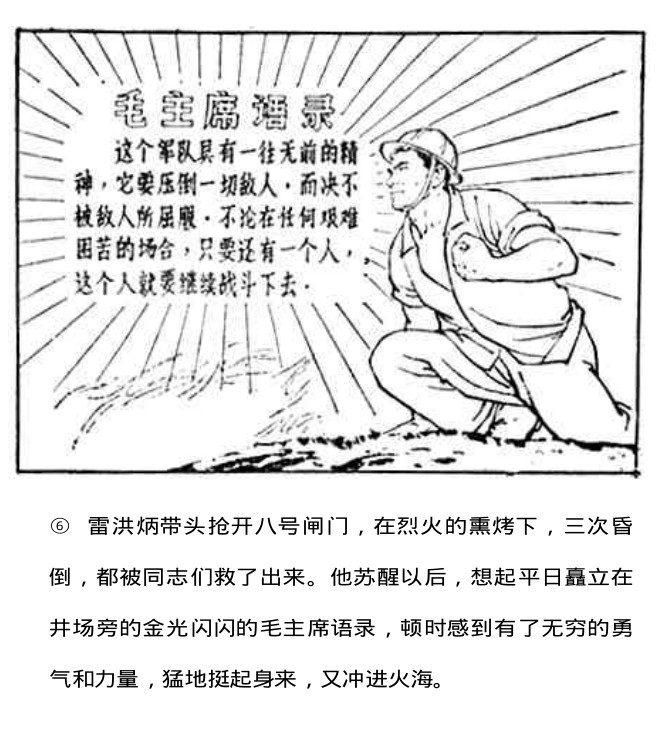
⑥ 雷洪炳：語錄寫在天空上 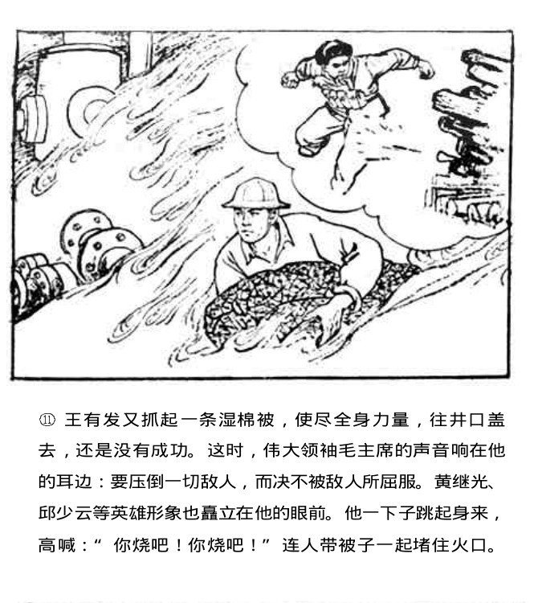
⑪ 王有發：雲裡是誰？
⑪「這時，偉大領袖毛主席的聲音響在他的耳邊……黃繼光、邱少雲等英雄形象也矗立在他的眼前 。他一下子跳起身來，高喊：『你燒吧！你燒吧！』連人帶被子一起堵住火口。」
文字只說「象黃繼光一樣」；畫家把黃繼光放進了王有發的腦子裡 。
〈偉大毛澤東思想的又一曲凱歌——32111 鑽井隊血戰火海搶救氣井的英雄事跡〉，《工人日報》美術組編繪，《人民日報》1966 年 10 月 7 日，第四版。
英雄譜：1966 年的讀者已經認識的人
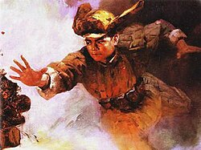
缺圖img/h_huangjiguang.jpg
黃繼光 1931–1952 · 韓戰上甘嶺，用胸膛堵住機槍眼 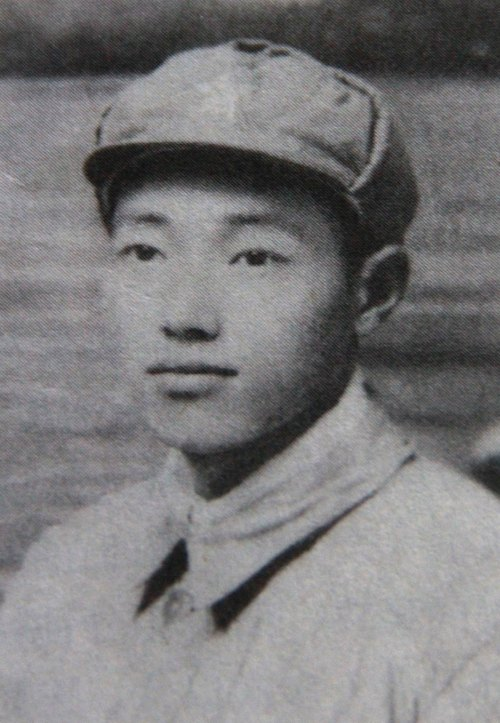
邱少雲 1926–1952 · 韓戰潛伏時被燒死，一動不動 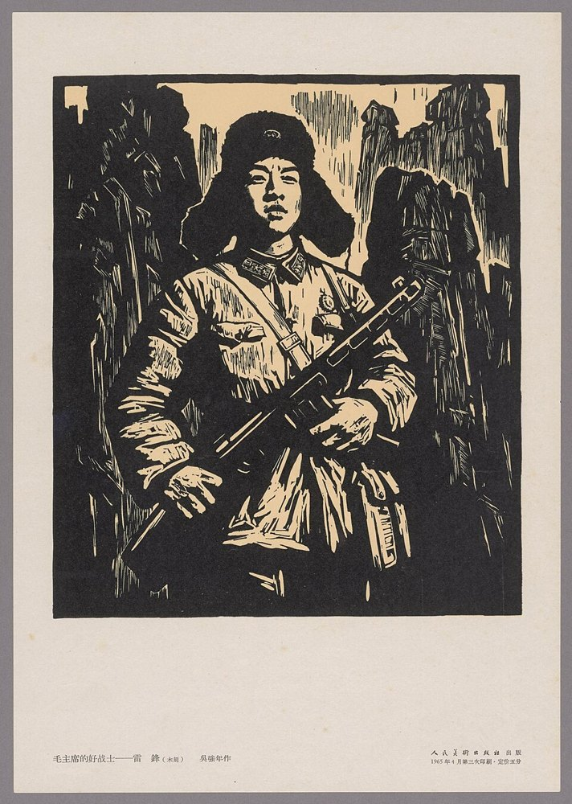
雷鋒 1940–1962 · 1963 年起「向雷鋒同志學習」；日記 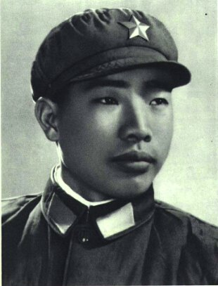
王傑 1942–1965 · 撲向爆炸，保護民兵 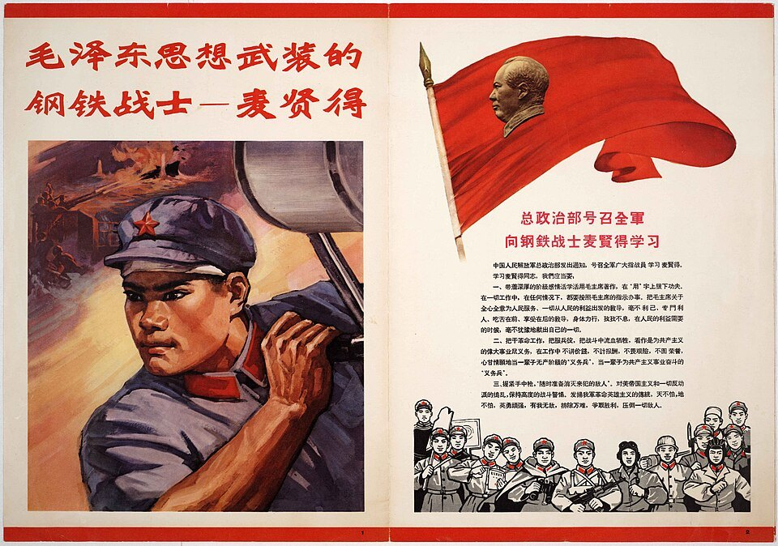
麥賢得 b. 1945 · 1965 年海戰，頭部重傷仍堅持戰鬥 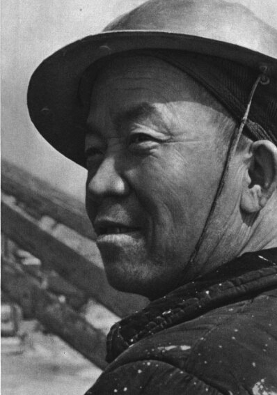
王進喜 1923–1970 · 大慶「鐵人」 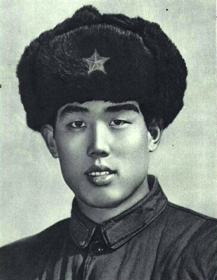
劉英俊 1945–1966 · 攔住受驚的馬 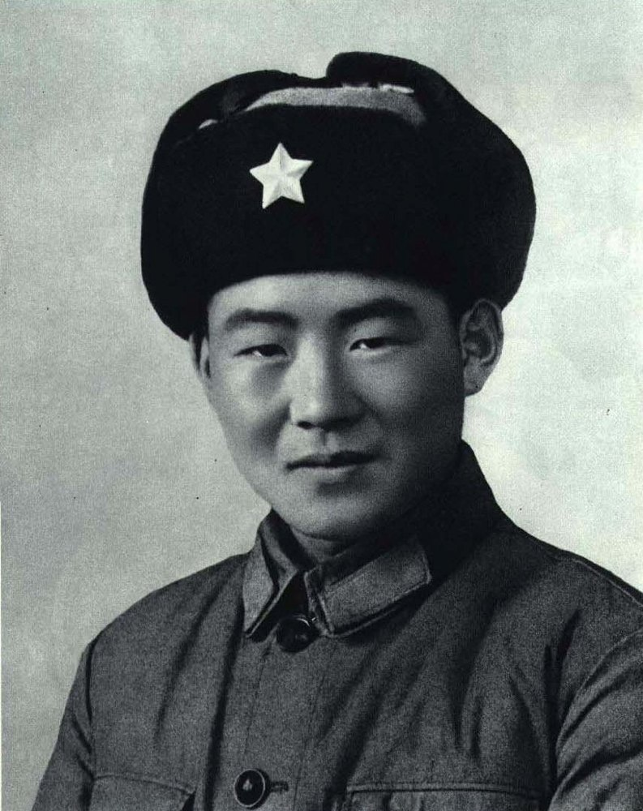
蔡永祥 1948–1966 · 從鐵軌上搬開大木頭
《人民日報》9/26 的副標題：32111 是「文化大革命中湧現的集體的黃繼光、集體的邱少雲、集體的歐陽海、集體的麥賢得 」。
32111 的工人怎樣想像自己
王有發 裹著濕被子，喊著「你燒吧，你燒吧！」，「象黃繼光 堵敵人的機槍眼一樣」壓在火口上。救出後：「我是工人階級，我是國家主人，只要我還有一口氣，就要與烈火拚到底！」
→
冉樹榮 換藥不吭一聲：「麥賢得 在戰場上頭部受了重傷，還堅持戰鬥，我就是要學習他的硬骨頭精神，做毛主席的堅強戰士。」
→
全隊 ：「有三分之一的同志寫了近萬字的日記 」；「上班學語錄，床頭掛語錄，開會學語錄，談話念語錄……」
→
英雄在火裡想起別的英雄。文本裡的人已經 是讀者：按照讀過的故事行動，再被寫成下一個故事。
醫院：52.7% 與最後的話
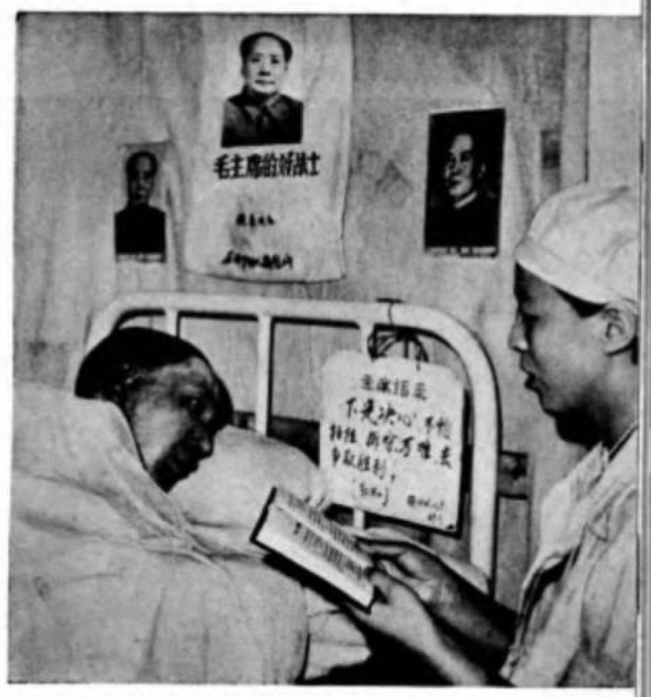
護士為 冉樹榮 讀語錄；床頭：「下定決心，不怕犧牲……」China Reconstructs (1967), 29
「冉樹榮同志，他的燒傷面積有百分之五十二點七 ……揭一次紗布就象撕掉他的一層皮，血水把紗布染紅了，疼得他渾身發抖，但他從沒有吭過一聲」
醫生：「老冉，我們是毛主席派來的醫生 。這是毛主席給你的藥，快點吃！」他「馬上就大口地吃了」。
鄧木全臨終「用盡一切力量，發出細微的聲音說：『按……毛主……席……的……話……去……做……。』 剛說完，就和大家永別了。」
小數點是為了準確 ；撕掉的皮、一字一頓的遺言，是為了讓你相信 。
翻譯成英文的時候，少了什麼？
《解放軍報》，1966/10/14 China Reconstructs , 1967/1（劉守榮報告的節譯）「兇猛的火焰，燒掉了我們 的頭髮，燒焦了我們 的皮膚，燒壞了我們 的手腳，但永遠燒不壞我們 忠於毛主席、忠於黨的一顆紅心。」 “Flames can melt iron and steel but cannot conquer the red heart of a revolutionary loyal to Chairman Mao and the Party.” 「他轉身又抓起第二床濕被子裹住全身，嘴裡喊著：『你燒吧，你燒吧！』象黃繼光堵敵人的機槍眼一樣 ，冒著熊熊烈火，連人帶被子，一下死死壓在火口上……」 “He grabbed another wet quilt, wrapped it around his body and threw himself on the burning well-head, shouting, ‘Go ahead and burn! Go ahead and burn!’”
· 燒傷的身體和「我們」不見了；黃繼光也不見了。
· 外國讀者不認識黃繼光：本真靠讀者讀過的東西 ，換了讀者，就得換寫法。
旁白：用電腦讀崇高
高爾基〈海燕之歌〉：「讓暴風雨 來得更猛烈些吧！」：自然 的詞（暴風雨、大海、閃電）和政治 的詞（勝利、預言家）交織在一起。
自然的崇高詞 ：用 word2vec 找「暴風雨」的近義詞 → 317 個詞（雷霆、怒濤、火海、熊熊、沸騰……）與之相關的話語 ：主題模型找出在小說裡和它們一起出現的詞（戰爭、國家、宗教、情慾……）網絡 ：兩類詞在兩句之內同時出現，越來越密，直到高潮。
接回第 8 週的霍根：自然詞喚起身體的情感記憶 （風暴、火、海）；政治話語借用這些反應，像腳本 一樣把它們組織起來。
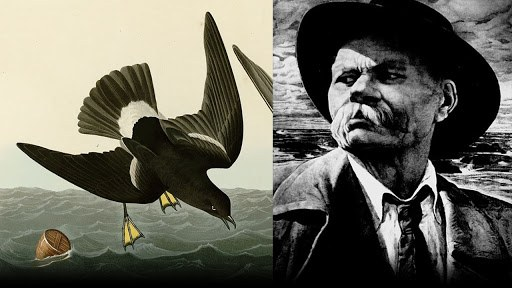
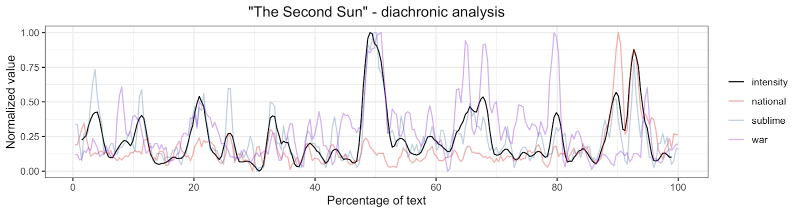
劉白羽《第二個太陽》（1987）：崇高詞（灰）與戰爭、國家詞（紫）在全書中的分布
Kurzynski, “On the Technology of the Sublime in Modern Chinese Narratives,” 數字人文 2022.1, 87–115。
實驗：32111 的文本，十個小標題
火場
0
20
40
60
開頭 · 自然的崇高詞：每千字 6.7 開頭 · 量級詞（偉大、無限……）：每千字 20.0 開頭 · 政治詞：每千字 60.0 開頭
① · 自然的崇高詞：每千字 0.0 ① · 量級詞（偉大、無限……）：每千字 7.8 ① · 政治詞：每千字 41.0 ①
② · 自然的崇高詞：每千字 9.0 ② · 量級詞（偉大、無限……）：每千字 0.0 ② · 政治詞：每千字 13.6 ②
③ · 自然的崇高詞：每千字 5.8 ③ · 量級詞（偉大、無限……）：每千字 0.0 ③ · 政治詞：每千字 7.2 ③
④ · 自然的崇高詞：每千字 8.0 ④ · 量級詞（偉大、無限……）：每千字 1.0 ④ · 政治詞：每千字 13.0 ④
⑤ · 自然的崇高詞：每千字 5.3 ⑤ · 量級詞（偉大、無限……）：每千字 0.0 ⑤ · 政治詞：每千字 4.4 ⑤
⑥ · 自然的崇高詞：每千字 7.2 ⑥ · 量級詞（偉大、無限……）：每千字 4.5 ⑥ · 政治詞：每千字 25.3 ⑥
⑦ · 自然的崇高詞：每千字 0.0 ⑦ · 量級詞（偉大、無限……）：每千字 8.4 ⑦ · 政治詞：每千字 36.2 ⑦
⑧ · 自然的崇高詞：每千字 1.3 ⑧ · 量級詞（偉大、無限……）：每千字 6.5 ⑧ · 政治詞：每千字 24.8 ⑧
⑨ · 自然的崇高詞：每千字 2.5 ⑨ · 量級詞（偉大、無限……）：每千字 6.4 ⑨ · 政治詞：每千字 52.1 ⑨
⑩ · 自然的崇高詞：每千字 0.0 ⑩ · 量級詞（偉大、無限……）：每千字 21.4 ⑩ · 政治詞：每千字 59.0 ⑩
每千字出現次數
自然的崇高詞
量級詞（偉大、無限……）
政治詞
火場（②–⑤） ：自然的崇高詞最多（火海、烈火、兇猛、熊熊），政治詞最少。
開頭與結尾 ：自然詞消失，政治詞最多；「偉大」17 次，幾乎都用在毛主席、黨、毛澤東思想上。
「無限」 12 次，全部是「無限熱愛、無限忠誠……」：康德的無限，成了一種感情。
崇高詞表：Kurzynski (2022) 附錄 316 詞；政治詞表為本課自定（毛主席、毛澤東思想、黨、革命、語錄、人民、國家財產、階級……）；只算字串，不分詞。每千字出現次數。
回到文類：誰在說「我們」？
敘述者是副隊長劉守榮：10 月 4 日在北京群眾大會上的口頭報告 。勒熱訥（Lejeune）：自傳的契約是「作者＝敘述者＝主角 」，並「發誓說出真相」。可是劉守榮不在雷洪炳、牟茂修的腦子裡。那麼，作者是誰？
「英雄們的講演稿，一律由報道組的筆桿子們分頭編寫 ，集體討論定稿後，報領導審查通過，再將講稿發給他們背 。演講時的表情、語氣、動作則由我們宣傳隊的人作『導演』，我曾經多次參與這樣的『指導』。」李中石，〈參加 32111 隊血戰火海事跡宣傳演出記〉，《紅岩春秋》2000 年第 6 期（簡體轉繁）
「隊的報告稿自然也是由宣傳部門指派的筆桿子精心炮製，又經若干領導幹部層層審查後定稿的。……這些文字一經由隊的代表宣讀，並由新華社播發、報紙刊登後，就變成了『工人階級的聲音』 。」何蜀，〈「文革」中的 32111 鑽井隊〉，《文史精華》2001 年第 1 期（簡體轉繁）
“…a figure is at its best when the very fact that it is a figure escapes attention .”
朗吉努斯：「辭格最好的時候，就是沒有人察覺它是辭格 的時候。」技巧被崇高的光芒遮住，像暗淡的光被陽光吞沒。
Longinus 17.1–2 (Roberts)。中譯為暫譯。
豪言壯語與烈士，是怎麼「做」出來的
「最初討論時，採訪組提出，要像宣傳雷鋒、王傑那樣 ，32111 隊也應該有自己的豪言壯語，於是便按照當時的『時代精神』幫忙『總結』，最先提的是『把毛主席的指示落實在行動上』，後來，又覺得不太響亮，改為『把毛主席的指示印在腦子裡，刻在骨頭上，溶化在血液中，落實在行動上』。」
→ 文本：「我們把毛主席的話『印在腦子裡，溶化在血液中，落實在行動上』。」
「張永慶雖然是共產黨員，但在『文化大革命』運動初期被工作組劃成了『三類 』……三類屬於不可靠的問題人物……總指揮張文彬……十分生氣：『人都燒死了，還講什麼二類、三類，這些好同志就應該大力宣揚』……張永慶……成為六烈士之首 。張永慶遺留下來的日記，也被找來由宣傳部門『重新整理』，摘抄成『紅色日記』發表。」
李中石 (2000)，《紅岩春秋》2000 年第 6 期（簡體轉繁）。
兩個詞：準確與本真 accuracy / authenticity
準確 accuracy “the extent to which a text’s representation is consistent with available evidence ”
文本的再現與現有證據 相符的程度。
本真 authenticity “an impression of accuracy … shaped by the prior representations of the past that have been encountered by an individual reader”
讀者覺得「這就是當時」的印象 ；它由讀者以前讀過、看過的 再現所塑造。
“Authentic representations need not be accurate. ”
「本真的再現，不一定準確。」
Laura Saxton, “A True Story: Defining Accuracy and Authenticity in Historical Fiction,” Rethinking History 24.2 (2020), 127–132 本真是一種互文 的關係：看起來真，是因為它像我們以前看過的「真」，比如黃繼光、雷鋒的日記。
一個座標系
雙重訴求 dual address
準確 accuracy →
本真 authenticity →
鑽井日誌：「6 月 21 日下午關井求壓」 《林海雪原》：楊子榮打虎 上週：「四根煙囪」 32111 報導（1966/10） 「52.7%」＋「你燒吧，你燒吧！」 大慶，紅衛兵的語錄本：簽名「32111 鑽井隊」 1967：同樣的事實，換了劇本
可核對，但沒人會感動。
虛構，但讀者「認得出」英雄。
兩者兼得 ：報紙為事實擔保（人名、閘門編號、52.7%），小說的手法讓人相信（內心、頓呼、英雄類比）。延安講話：文藝「比普通的實際生活更高……更典型」。
完全不準確，大家都當真。
1967 年，鑽井隊分裂成兩派，昔日戰友互指「反革命」；手指粘在閘門上的黃成厚，在與紅衛兵的衝突中受傷。事實沒變，閱讀的劇本變了：「造反有理」取代了「捨己為人」。
Saxton (2020)；毛澤東〈在延安文藝座談會上的講話〉(1942)；何蜀，〈「文革」中的 32111 鑽井隊〉(2001)。
從「他／她」到「我們」
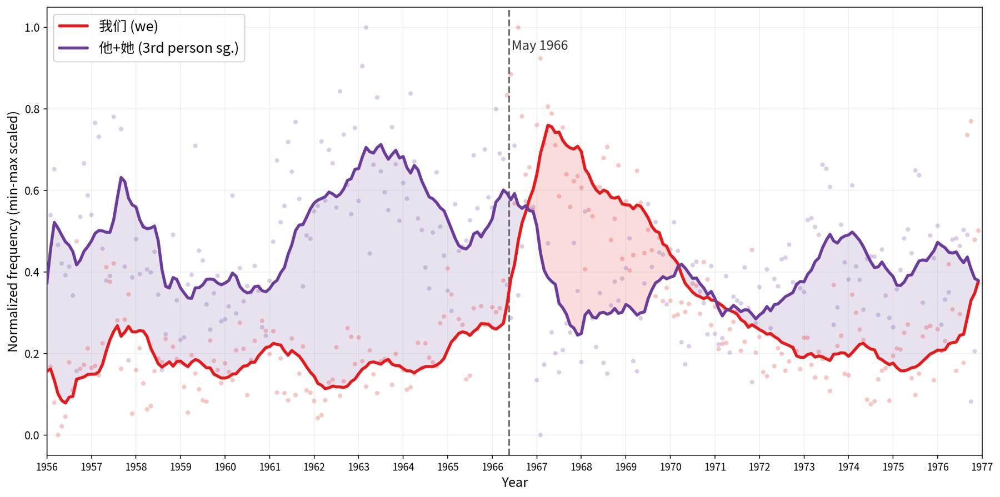
《解放軍報》1956–1976。紅：我們；紫：他＋她。虛線：1966 年 5 月 1966 年 5 月，批鄧拓：「鄧拓，我們就是要鬥倒你！ 」（5/9）。5 月 13 日，19 篇文章中有 13 篇用了 5 次以上「我們」，約四月的三倍。
「為了逮住這個『氣老虎』，我們 遵照毛主席……的教導……」我們 ＝ 鑽井隊
「兇猛的火焰，燒掉了我們 的頭髮……但永遠燒不壞我們 忠於毛主席、忠於黨的一顆紅心。」我們 ＝ 任何忠於毛主席的人？
「我們」不是先存在的群體，而是一個宣稱 ：誰說出它，誰就在裡面。讀者也被邀請進來。
大慶，1966 年 10 月 27 日
宣傳演出隊：約 180 人，大多是重慶來的十幾歲「社會青年」，在舞台上重演那場大火，巡迴到北京、大慶。
「……在門口碰到幾個戴著紅衛兵袖章的學生，衣服上還散落著雪花，臉凍得紅紅的……看到我們，他們就一擁而上，拿出語錄本要我們簽字，其情景不亞於今天的『追星族』找明星簽字。我們再三解釋，我們不是英雄，只是演出隊的 ，但他們依然不聽，說他們冒著風雪走了兩個多小時才找到我們：『你們不是英雄，也是英雄的戰友！』 我們實在無法推託，只能按宣講團的規定，在他們的語錄本上寫上：『把毛主席的指示印在腦子裡，溶化在血液中，落實在行動上！』落款一律寫『32111 鑽井隊』 。這也是我一生中冒英雄之名給別人簽的一次字。」 李中石 (2000)（簡體轉繁）
準確：零。本真：滿分。而且是宣講團規定 的。
再問一次：這是什麼文類？
· 新聞 的擔保：黨報、日期、人名、52.7%。
· 小說 的手法：內心、語錄「閃過」、頓呼、英雄類比。
· 自傳／證詞 的形式：「我」、「我們」；但講稿是筆桿子寫、英雄背的。
· 崇高 的修辭：不說服，而征服；沒有安全距離；主體是「我們」。
五個人真的死了。說這篇文章「像小說」，對死者公平嗎？
導修（11/5）：閻連科《為人民服務》
閻連科（b. 1958），《為人民服務》（2005），在中國大陸被禁。題目，就是傷員們在病房裡請護士念的那篇文章：「為人民利益而死，就比泰山還重」。
李澤厚的論文叫〈關於崇高與滑稽 〉。崇高的反面是什麼？
· 語錄 ：在 32111 的文本裡，它讓人站起來；在小說裡，它做什麼？
· 身體 ：燒傷的身體、死後的「姿勢」 vs. 小說裡的身體。
· 文類 ：小說自稱是虛構的。它比 32111 的文本更不真實嗎？
比較短文（第 9、10 週）：11 月 6 日上午 9:00 截止。